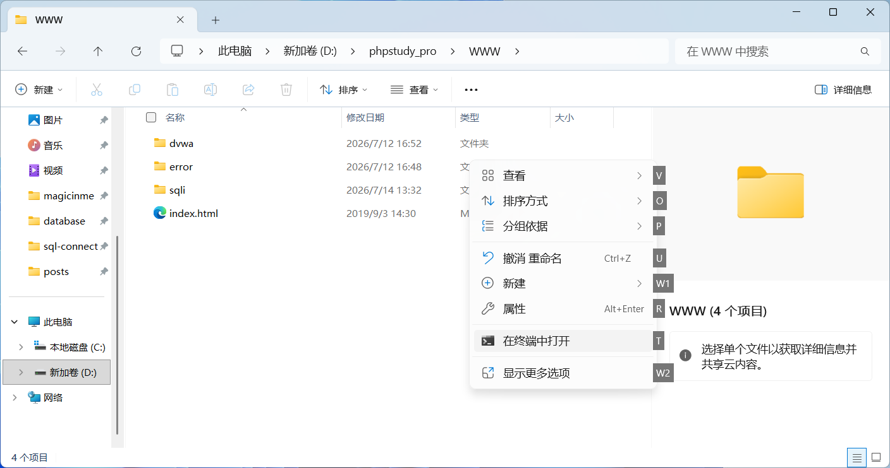
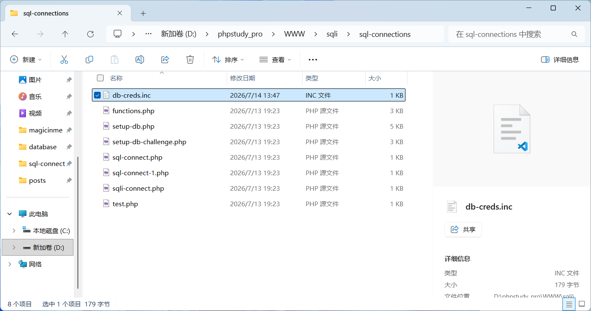
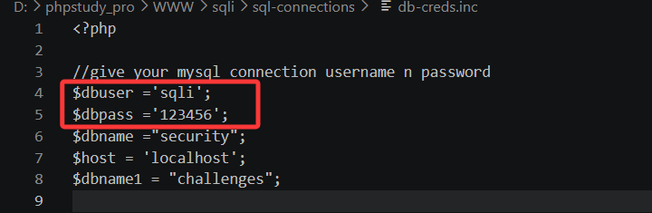
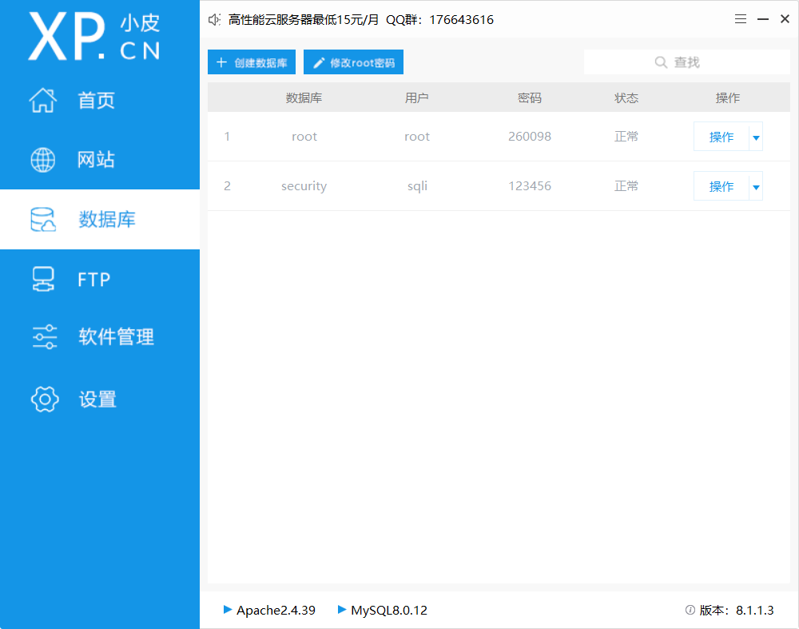
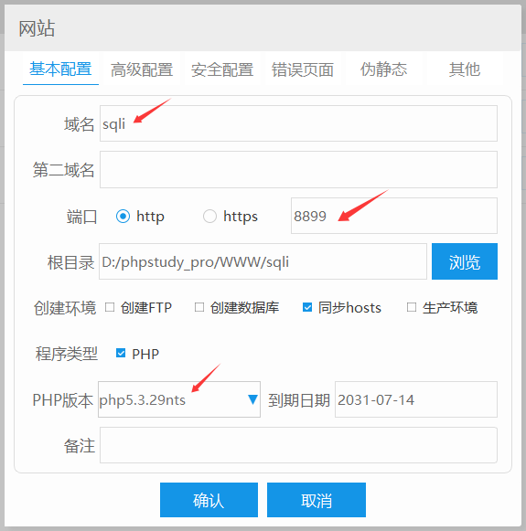
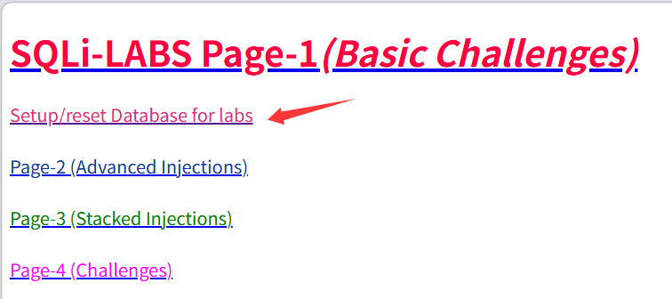
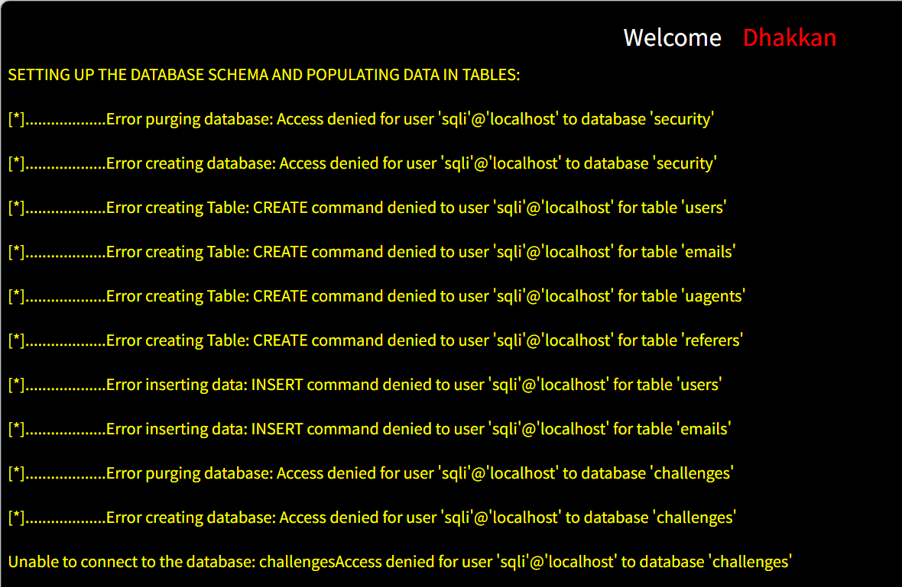

搭建sqli-labs靶场(win)
1、安装好phpstudy
省略。详见文章搭建DVWA靶场
2、下载
在..\phpstudy_pro\www路径下打开cmd，执行
git clone https://github.com/Audi-1/sqli-labs.git sqli-labs

3、修改密码
在phpstudy_pro\WWW\sqli\sql-connections找到文件打开。

修改user和pwd和接下来要创建的数据库名和密码一样

4、创建数据库
在phpstudy新建数据库，用户名密码设成前一步骤中修改好的账密

5、创建网站
新建网站，填好域名，修改未冲突端口号，php版本改成5.3.29nts。

6、初始化数据库
访问localhost:port，点击setup/reset database for labs

7、完成
